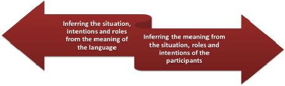

Inferencing

This is quite a long guide with several sections so you may like
to search it (use Ctrl + F to do that).
The guide defines two directions of inferencing and then considers top-down and bottom-up strategies with some classroom
implications of both. On the way, it covers extra-, inter- and
intra-linguistic clues to meaning.
You can click on these links if you are only interested in
top down or bottom-up
processing.
 |
What does this mean? |
If you glance at this image, it seems reasonable to assume that
will understand that it tells you the direction to an emergency
exit. However, nothing in the image explicitly states anything
about an emergency, an exit or what you are supposed to do with this
information. You inferred all the data you need from simply
glancing at the image.
How did you do that? Think for a moment and then
click here.
- You guessed, based on your knowledge of people, that the shape on the left is meant to represent a running human.
- You assumed the arrow pointed towards something important (because that's what they usually do).
- You assumed that the white box on the right represented a door, even though only its shape is a clue (and it is too small in relation to the running figure).
- You put all this together and inferred that this is the direction you should run in to get to the exit.
- You inferred that the exit would lead to safety because there's little reason to have the sign otherwise.
- You inferred that this was an emergency notice because emergencies are the most common times when people run. You may also have used your knowledge that emergency exit notices are usually bright green.
This is not particularly mysterious, although it is quite clever. People do it all the time. In fact, it would be virtually impossible to live in any sort of society without drawing reasonable conclusions based on your experience and knowledge of other people from what you see, hear and read.
 |
What is inferencing? |
Inferencing is often described as a form of guessing. It is not. Guessing usually implies a stab-in-the-dark approach to knowing something. Inferencing, on the other hand, may be defined as
deriving logical conclusions from premises known or assumed to be true
In other words, it is a method of calculating what is likely to be true based on prior expectations and knowledge. In the field of statistics, one approach is to do what is called Bayesian processing to arrive at reasonable inferences based on expectations and previous knowledge of the world.
In the process of learning or using a language, inferencing is a key skill but it is not one, as we saw above, that learners need to be taught how to do so much as one they need deliberately to employ.
 |
Here's an example: |
If you are presented with a die and asked to infer what your
chances of throwing a six (or any other number between 1 and 6)
were, you would probably say, quite rightly, 1 in 6, i.e., a roughly
16.67% chance that any throw of the die will result in a six (or any
other possibility). You would, therefore, guess that your
chances of throwing a particular number are 1 in 6.
Now, however, you are told that out of the last 100 throws of this
particular die, 50 have resulted in a six. What is your
'guess' now of the chances of a six coming up?
Right: inferencing is more than guessing.
Now take the situation in which you are faced with an unknown
word in a sentence. The word is, for argument's sake,
chenlob and you have no idea what it means at all. Can
you infer its meaning?
No, you can't but you can make some guesses based on what you know
about the language.
You have, roughly a 20% chance that the word is a noun and much less than a 1% chance that it's a hitherto unknown preposition. It could easily be a verb (a chance of something like 15%) but it is less likely that it is an adjective or an adverb (around 7% each). It is almost impossible that the word is a new (to you) determiner or a pronoun.
Now you may be presented with a little co-text and see:
the chenlob
because you can infer from your knowledge of syntax that the word is
a noun, preceded by a determiner, you may adjust your inference to
decide that it is a noun of some kind.
Unfortunately, you now see more co-text and that is:
the chenlob wall
so now you may discard your original inference and decide, on the
basis of this new evidence, that you are presented with an adjective
which is modifying the word wall. Your knowledge of
syntax allows this to be the most likely possibility because the
sequence determiner + adjective + noun
is a commonplace of English.
Moreover, you also know what a wall is and that can lead
you understanding that the adjective does not mean something like
speculative, electronic, papery, or happy because these are
not epithets which can be applied sensibly to walls. It could,
naturally, describe a range of other possible ways a wall can be
including high, brick, beautiful, surrounding, impenetrable
and so on.
If, however, you were presented with
The chenlob spoke at the meeting
you would be able to reinforce your suspicion that the word is a
noun and, moreover, that it represents some kind of person because
your knowledge of the world includes the fact that only humans speak
at meetings.
If you are now given written context (with punctuation as well as co-text) such as:
The Chenlob spoke at the meeting and all her fellow Chenlobs applauded her even though the chairman had determined that Chenlobs do not have voting rights because they come from outside the county.
you may be able to make a pretty good guess that a Chenlob is a member of a definable set of people identified with a place.
What you have done here is apply probabilistic reasoning based on both your knowledge of the syntax of the language and your understanding of the world of meaning. In other words, you have applied extra linguistic knowledge as well as intra-linguistic knowledge to reach your inference.
Dennett, 2017:269, puts it this way:
... the brain's strategy is continuously to create "forward models," or probabilistic anticipations, and use the incoming signals to prune them for accuracy – if needed. When the organism is on a roll, in deeply familiar territory, the inbound corrections diminish to a trickle and the brain's guesses, unchallenged, give it a head start on what to do next.
What we do next, of course, is understand and, if necessary, act on the linguistic data we are receiving.
 |
Why is inferencing important? |
There are two main reasons:
- No user of a language can possibly know all the words, structures and expressions in the language so we have to infer meaning from what we do know. This is, naturally, especially important for learners of a language.
- Very few texts, whether spoken or written, actually contain all the information we need fully to understand them. Speakers and writers will always assume some prior knowledge in their hearers and readers. If we didn't do this, texts would be interminably long. Try explaining how to make an omelette to someone who doesn't know anything about food, what a kitchen is or what it's likely to contain and you will see what's meant.
Extra-linguistic knowledge |
In order to understand the sign at the top of this page, you used no linguistic knowledge at all simply because no language was present. What you used was extra-linguistic knowledge. That is your knowledge of the world, people's motivations for informing you and your understanding of shape and movement.
Extra-linguistic knowledge can be further refined:
- knowledge of the world
- this was what you used to understand the three simple shapes on the sign, the implied direction of movement and the purposes of the sign in general
- knowledge of people's motivations
- the assumption you used here was that a sign is intended by someone else to tell you something helpful
- knowledge of roles in society
- you assumed, probably rightly, that the people who designed it and had the sign put up were a) in some kind of authority and b) in possession of knowledge that you need, i.e., better informed
As an example of how these can be applied to text, try figuring out what this means:
It's OK, ladies and gentlemen. You can go back to your offices now.
- What is the meaning?
- Who is speaking to whom?
- Where is it happening?
- What has just happened?
- What happens next?
- How did you know all this?
Click here when you have answered those questions.
- The meaning is pretty easy. Someone is telling you that a situation has been resolved and you are allowed to go to your office. You knew this by understanding the meaning of the words and working out the syntax. The key words you needed to understand are OK, go back and now. The key syntactical clues are the relationship between can and go back, the function of the prepositional phrase to your offices and the function of the adverb now in modifying the verb phrase.
- Clearly someone in authority because they are in a position to allow you to do something but also someone in some kind of service because they are being deferential and using the formulaic ladies and gentlemen phrase. It is almost certainly one person speaking to many. You knew this by using sociolinguistic knowledge and understanding elements of style as well as the import of the modal can.
- You know that it is not in the office because of the verb go and the adverb back. A reasonable assumption, based on knowledge of the world plus those two linguistic clues is that you are outside an office building of some sort.
- You can assume that the people have just come from the offices (else they couldn't go back) and you might also assume by logical deduction that there has been some sort of alarm to cause people to leave (fire?, bomb scare?).
- As the authority figure has spoken, it is fairly safe to assume that people will now return to work because your social knowledge tells you that people will generally trust authority figures.
Most of the meaning and understanding of circumstances that you are able to extract from the language are not to do with language clues at all. You have deployed two types of knowledge to do all this.
bottom-up processing
You used this to figure out the import of OK, go back and now. If you were actually listening to the speaker, you would need to use your knowledge of the phonemes of English, of connected speech, of word meaning and word class and syntax.
top-down processing
You used this for everything else. Your sociolinguistic knowledge, your knowledge of the world, your understanding of social relationships and your ability to draw logical conclusions from linguistic clues are all facets of top-down knowledge that you bring to complete your understanding.
in combination
It is very important to understand that, although we have separated out the types of processing you did here, you did not use one type of processing and then the other; you combined the types to make meaning clear. That is how people do things.
Extra-linguistic knowledge and written texts |
As far as strategies are concerned, the same considerations apply
to written text. We have more time and leisure to extract the
meaning but fewer clues about the situation and role relationships
to work on. As a result, we use less extra-linguistic
knowledge to figure out meanings.
That does not, however, mean that our knowledge of the world, our
ability to draw logical conclusions and our knowledge of the social
fabric around us are abandoned.
An email from a friend and a letter from the tax man will set up
completely different expectations in us and will be dealt with in
different ways.
reading between the lines
A lot of reading is actually reading between the lines, not simply extracting meaning from the written word. Take, for example, these snippets from British newspapers and see what they mean and what they imply.
- There are those who believe that
the government's responsibility is to keep its citizens safe at
all costs.
This is an example of stating a fact in a way that implies the writer doesn't agree. Skilful readers will assume that the writer is going to go on to state an opposing view. - The issue has ended up like that
of the gas bill put behind the clock on the mantelpiece.
Similes are commonly used in writing for effect. Taken at face value this simply means that an issue has been postponed but an alert reader will note that the writer has a point to make, i.e., that it shouldn't be postponed and action is needed now.
Some types of text will require more knowledge of the world or a particular culture than others if they are going to be correctly interpreted:
- Pick Your
Own
Is not a request for you to go away and harvest your own vegetables and fruit; it is an invitation to come in and harvest some of mine (for a price). - Please wait
behind the yellow line until called forward
Is not a polite request; it is an absolute imperative imposed by immigration officers the world over.
You can probably think of many more occasion when what you read needs to be interpreted by using extra-linguistic data. Advertising language is, of course, a rich source of such things because the writers of it are trying to make a case for something. Only the very optimistic will interpret Up to 50% off to mean that what we might actually want will be half price.
 |
Inter-lingual clues: inferencing across languages |
One form of knowledge which also lies just outside the text
(spoken or written) is the knowledge learners have of their own
languages. Many teachers have a tendency to see learners'
first languages as some kind of impediment to learning English and
there are occasions when cross-language interference is a problem
but using the forms, lexis and structures of one's first language to
discover meaning in a second is often very helpful.
Many European languages for example, will have a
range of cognate words and structures which aid comprehension and,
although such things are often unreliable, they are, more often not,
helpful.
For example:
- If I am a German speaker and I have spotted that an initial 'p' in English is often a 'pf' in German and a final 'th' is often a 'd' in German, I will have less difficulty than many in knowing what a path is (because in German it's Pfad).
- If I speak any of Europe's Romance languages such as French or Spanish, I will be able to make quite accurate guesses at many thousands of words in English derived from French or Latin. I will be right, too, overwhelmingly more often than I'm wrong. I can also do this if I speak a language such as Polish or Russian which also has imported many Latin words.
- If I speak any of a number European languages, I will find that the comparative and superlative forms of adjectives in English are quite easy to understand and use because the structural changes are parallel.
- Even if I speak an unrelated language such as Mandarin, I can use some inter-lingual clues (such as the tendency to isolate and depend on word order to carry meaning) to figure out how some tense forms and modal auxiliary verbs operate in English.
 |
Inferencing is a two-way street |
We can, as you saw above, use inferencing skills to work from the language to the situation but, probably more importantly for learners of a language, we can also work from the situation and our knowledge and cognitive abilities to understand the language. Graphically this two-way process is like this:

 |
Using top-down processing to access texts |
Knowledge external to the text itself is a
powerful tool in helping us to understand. Using such
knowledge is called top-down processing (a term stolen from
cognitive psychology, by the way).
We have seen the sorts of knowledge one might employ to
figure out a context for an utterance (the office evacuation scene).
Now, we'll work the other way and see how the knowledge our learners
already have or can be given helps them to understand a written or
spoken text.
Knowledge of the world
Given a clue such as this, most of us can figure out what the following text will be about.
Protesters take to the streets |
It's not at all difficult to work out the meaning of
protesters and take to the streets from
this.
In our first languages, we unconsciously use images and titles to
predict what sort of text we are about to read. We also use
images, the situation and introductions to predict what we are going
to hear (on TV, in an airport or on the radio, for example).
This is a process often called schema activation.
A schema can be defined as a mental framework that we can use to
organize and understand information. (The plural is,
incidentally, schemata.)
The picture above and its headline caption serve to activate our
schema concerning demonstrations and riots so we are prepared for
what follows.
That can be very helpful but schemata cut both ways: activating a
schema may lead us to exclude or ignore information which does not
fit in to our world view or expectations.
Once primed by an active schema our minds are prepared to encounter the sorts of language we are likely to find in the text that follows (whether we are listening to / watching a TV programme or reading an article). This has three main characteristics. Think for a moment about what you expect the text to be like and then click here.
- lexis
- we will expect the text which follows to include terms such
as riot, police, violence / violent, grievance, mass,
aggression, injure / injury / injured, attack, baton, charge
etc. and can actively look for the presence of these lexemes.
In addition, we may also be prepared for the fact that many of the verbs will describe behaviour and action and that some will also tell us the relationships between people and ideas. So we won't be surprised that verbs such as protest, march, believe, demand, become, appear and so on might be in the text. - information
- we will also be primed to expect to be told where something happened, when it happened and why it happened. In other words, we are expecting information about circumstances: on the streets of, in the centre of the city, last night, during the day, for some hours, as a result of etc. We can listen out specifically for these and that helps us to get the most important information.
- structure
- we can assume from our general schema to do with news reports that the essential information will be presented early, detail will come in the centre of the text and some information concerning people's reactions to the events will come towards the end. This is called our generic knowledge of information staging in this kind of text (a report).
 |
Teaching implications |
Learners of a foreign language will draw on world knowledge and their various schemata unconsciously in their first languages. However, in a second language, the argument is that they need some specific nudging to do so. For this reason, pre-listening / reading tasks are often devised along the lines of, for example:
Lexis awareness and prediction:
Cross out the words you do not think will be in the text:
| verbs | nouns | adjectives | ||
| march relax consider attack hate enjoy demand request write shout |
speak talk hit help calculate injure control drive treat gather |
protesters police vegetable injury violence demonstration cigarette health army loudspeaker |
street garden weapon square building shop stones shield barrier computer |
violent peaceful happy angry desperate useful nice friendly aggressive huge |
Information checklist
Write down four questions you want to have answered by the text. For example, "Where did this happen?"
Information staging
Where do you think this information will come? Put B (beginning), M (middle) or E (end) next to the item.
| Information | B, M or E? |
| where? | |
| what happened? | |
| why was there a riot? | |
| who? | |
| was anyone hurt? | |
| what did the police do? | |
| how many people? | |
| what happens next? | |
| when? |
Simple tasks like these, done before hearing or reading a text can encourage learners to make useful inferences and these, in turn, help them understand.
A word of caution: however well designed and helpful such tasks are, they will not provide learners with all the information they need. If, for example, the text contains expressions such as carry out a baton charge, no amount of schema activation will help the learner understand if the lexis is unknown. To do that, learners need to activate other kinds of knowledge.
Using bottom-up processing to access texts |
Bottom-up processing refers to using in-text information to
understand meaning. This means using not the context but the
co-text. In other words, the learner has to use
intra-lingual clues.
If, for example, a text contains the
following, what information can learners use to understand the
underlined items?
The police carried out numerous powerful baton charges during the day and there were many casualties requiring hospital treatment.
Click here when you have thought of something.
- word classification, morphological and syntactical clues

- Probably the most important information we need to infer
meaning is word class. Here we can make easy inferences:
We know that carried out is a verb of some sort because we have a past-tense ending (we get a morphological clue) and an adverb particle (so we know it's a phrasal verb, too). We also know that it is a transitive verb because it has a subject (the police) and an object (baton charges). It must mean something like do.
We are not, therefore looking for anything except an active behavioural process meaning.
We know that baton charges is probably a plural, countable noun because of its ending and the fact that it is modified by an adjective we do know (powerful). Even if we don't know the adjective, we can infer that it is one from the morphology: its ending (-ful). So, we aren't looking for verbal or adjectival meanings. We know it is a thing that happens in a riot.
We know, too, that casualties is also a plural noun because it is preceded by a determiner (many) and has a plural ending.
Some knowledge of affixation is a help here because it often allows us to figure out word class, by inspecting suffixes or meaning by inspecting prefixes. For example, looking at the suffix on nationalise will allow us to recognise that it's a verb derived from the noun nation and looking at the prefix on denationalise will allow us to determine that it is a reverse process. See the guides to morphology and word formation for more, both of which are linked in the list of related guides at the end. - participants and colligation

- One key to getting at meaning of verbs is to look at who or
what can be the subject and who or what can be the object (i.e.,
the participants).
A fundamental distinction lies in the nature of colligation (a
kind of grammatical collocation to which there is a separate guide on this site,
linked at the end).
Some verbs can only take human or at least animate or robotic
subjects, some can take all kinds. In this case,
carried out is something done by people (the police)
so we know it refers to some sort of behaviour. If we
replace it with do the sense is maintained and we know
enough now to understand it.
Clearly, inferencing from the nature of participants also draws on our general knowledge of the world. We need to know what roles people, animals and objects take on.
For example, we know that:
children grow up and so do plants but adults rarely do
insects sting but people and large animals do not (they bite)
thunder and large machines may rumble but small animals and most people do not
animate things dig but inanimate objects do not unless driven and controlled by animate objects
people meditate but nothing else does
and so on. - modification

- Nouns
are participants whether animate or not and we can often figure
out their meaning from how they are modified.
In this case, the noun baton charges is clearly a compound noun and knowledge of one or the other parts will take us close to the meaning. It is also pre-modified by powerful and the object of a verb like do so we know it is some kind of behaviour by analogy with powerful argument, powerful voice, powerful running etc. More importantly, we also know that noun has an outcome – people went to hospital – so we can infer that it is not something gentle or pleasant. Add in our knowledge of the world and a bit of logical deduction, and we have arrived at a pretty close understanding of the meaning.
The noun casualties is pre-modified by many so we know it's countable. It is post-modified by the non-finite verb phrase requiring plus a noun phrase hospital treatment and that tells us almost all we need to know to figure out the meaning. - ignoring items

- Although it adds nothing to our understanding, ignoring what
we know to be unimportant is also helpful. Here, for
example, we can safely ignore the adverb out once we
have decided that the verb phrase refers to an action the
police do in riot situations. The word numerous
can also safely be ignored for general understanding as can many
other determiners.
What counts as safely ignorable depends on the context, the learner’s level and the reasons for reading. If we only want the general idea, we can discount much more than if detailed understanding is needed.
 |
Logical connections |
An aid to understanding is also to look for logical connections
in texts. This means deliberately looking for things
like hyponymy, synonymy and antonymy, cause, consequence and
purpose. Using logical connections is a prime case of applying
both top-down and bottom-up knowledge simultaneously to get to
meaning.
For example:
- If we encounter something like:
He unpacked his fishing tackle and laid it all out on the bank of the river. He attached the rod to the reel, put the net in the water and decided which hooks and bait he needed. Then he took out his camping stool, sat on it and started to fish.
We can make some inferences concerning the fact that fishing tackle seems to be a hypernym which includes things like rods, nets, reels, hooks and bait. If we know only one of those, we have arrived at the meaning of tackle. We also know that a stool is something you sit on and that's enough. - If we meet:
He wasn't at all angry. In fact, he was quite serene.
We can see that serene seems to be an antonym here of angry so if we assume it means something like calm, we can get on with the text. - If we meet:
A minor illness such as cold (or a chill as some people call it) is not a good reason to take a week off work
We have a set of logical connections. We know that the writer is using chill and cold as synonyms here and that whatever they are, they are not reasons for taking time off work. Using that information takes us very close to the meaning of the word chill. - If we meet:
The gale tore the roofs off the houses and blew down trees
We can also work out what a gale is from the consequences of its presence. (And we can use knowledge of participants as we saw above to know that people don't usually tear roofs off houses or blow trees down to know that the term gale must be some kind of natural wind event.) - If we meet:
He used a pipe wrench to undo the sink taps and replace them
We can also make some logical deductions about the purpose of a pipe wrench and we don't need to know exactly what it is.
|
|
Teaching implications |
Bottom-up processing is complicated and you cannot expect your
learners to apply the whole range of strategies at the end of a
couple of lessons.
As with much else, the teacher's job is to make eating the elephant
a more digestible undertaking. We need to take the skills
individually, design teaching procedures and materials that target
them and alert our learners to the usefulness of the strategies and
when it is appropriate to use them.
Inferencing is undoubtedly a key skill but wild guessing is not to be encouraged if we are trying to access the instructions for operating a chain saw.
Morphology, word class and sense relations
If you are lucky enough to find a text at the right level which contains numerous opportunities to identify word class and analyse morphology then use it. Otherwise, you may find it helpful to invent a text which contains items such as:
The trainee soldiers took careful aim at the target and let off a disorganised, ragged volley of shots. They all missed and some went very wide indeed.
Here, we can encourage learners to develop the skills of:
- Identifying word class:
Look at the words in red and decide if they are verbs, adjectives or nouns.
How did you do that? - Finding synonyms or antonyms:
Do missed and went wide mean the same or do they have opposite meanings?
Does the word ragged mean tidy or untidy? - Checking the meaning of affixation:
What does the 'ee' at the end of trainee mean?
What does the 'dis-' at the beginning of disorganised mean? - Noticing colligation and collocation:
Can you have a volley of:
words
stones
chickens
people
What did the soldiers take? How did they do it?
Can you let off:
a firework
a bus
a book
a bomb - Using hyponymy:
Which word doesn't belong here.
He sat on the grass in the park, opened the hamper and took out sandwiches, pork pies, knives, forks, the champagne, the dogs and plates.
What's a hamper?
Modification
What do the words
in red
mean?
Are they things or people?
- The patients waiting to see the doctor were nervous
- The boulder hanging over the road fell on the car and crushed it flat
- The old elm growing in the churchyard was cut down yesterday
- The huge, powerful crane lifted over 200 tons of wood onto the ship
- The suicidal maniac was standing on the top of the bridge looking down at the water, ready to jump
etc.
Purpose and consequence
Can you draw a picture of the words in red?
- The burglar used a crow bar to open the window
- She used a sledge to break up the huge rocks
- The plough cleared a road through the snow
What kind of thing is the word in red in:
- The gale drove the sea into the centre of the town.
- The riggers put up new telephone lines in the village.
- The house was completely destroyed in the conflagration and only a smoking ruin was left.
- His rashness and impatience resulted in the accident.
The trick, as always, is not to overload the learners but to present language and skills logically in manageable chunks.
Summary

| Related guides | |
| Krashen and the Natural Approach | for the guide to this set of hypotheses |
| how learning happens | for a general and simple overview |
| second-language acquisition | for a guide to some current theories |
| semantics | for a bit more on meaning and schema activation and how it works to refine meaning |
| input | for an obviously related guide |
| noticing | for more on a related and important learning skill |
| word formation | for some more on affixation and word class / meaning |
| morphology | for some analytical background to word formation |
| colligation | for a guide to this form of grammatical collocation |
| unlocking learning | this is a guide in the Delta section concerned partly with how inferencing should be done |
| the initial-plus skills index | for some essential guides |
| the in-service skills index | for those guides and a few more |
References for this kind of analysis:
Dennett, D, 2017, From Bacteria to Bach and Back, UK:
Penguin Random House
Hedge, T, 2000, Teaching and Learning in the Language Classroom.
Oxford: Oxford University Press
Field, J, 2009, Listening in the Language Classroom, Cambridge:
Cambridge University Press
Grellet, F, 1981, Developing Reading Skills, Cambridge:
Cambridge University Press
Hudson, T, 2007, Teaching Second Language Reading, Oxford:
Oxford University Press
Lynch, T, 2009, Teaching Second Language Listening, Oxford: Oxford
University Press
Rost, M, 2002, Teaching and Researching Listening, Pearson
Underwood, M, 1989, Teaching Listening, Harlow: Longman
Ur, P, 1984, Teaching Listening Comprehension, Cambridge: Cambridge
University Press
Wenden, A & Rubin, J, 1987, Learner Strategies in Language
Learning, Hemel Hempstead: Prentice-Hall International
White, G, 1998, Listening, Oxford: Oxford University Press